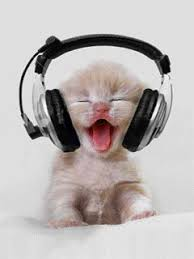

Ronronar de gatinhos traz efeitos positivos para os humanos
O ronronar dos gatos pode ajudar a reduzir o estresse, promover relaxamento e até contribuir para o bem-estar emocional, sendo associado a sensações de calma e conforto em humanos. Saiba mais!